Free and open source · runs in your browser
Draw flowcharts.
Keep your TikZ.
A visual editor for TikZ flowcharts where the code and the canvas stay in sync. Dragging a node writes
right=of small, not coordinates, and everything you didn't touch, comments and macros included,
stays exactly as you wrote it.
Lossless round trips
Visual edits become small text patches. Anything the editor doesn't understand is kept verbatim and drawn by TeX.
Code that reads hand-written
Relative positioning, named styles in \tikzset, meaningful node names and managed libraries.
A real TeX preview
An instant drawing while you drag, then a real compile by a TeX engine in your browser, with errors mapped to lines.
Start from a template
Each one is plain, idiomatic TikZ you can edit on the canvas or as code.
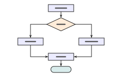
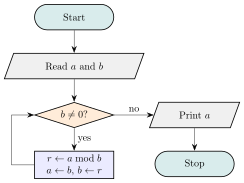
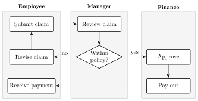
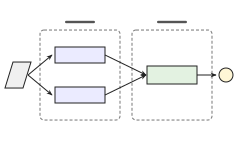
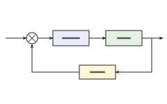
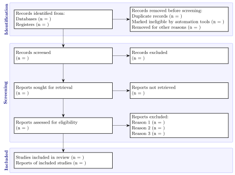
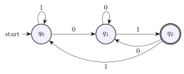
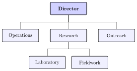
Neural networks
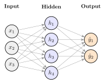
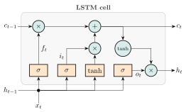
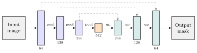
Other diagrams
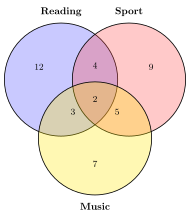
Your diagrams never leave your browser
No account, no server, no tracking. Your work is saved in this browser, the TeX engine runs on your computer, and share links carry the code in the part of the address that is never sent anywhere. After your first visit to the editor, it works offline.
Getting started
- 1
Paste or open TikZ
A bare
tikzpictureor a whole.texfile, or a Mermaid or Graphviz diagram to import. Or start from a template. - 2
Edit on the canvas or in the code
Drag nodes, draw edges from their anchors, press Tab to add a connected step. Both sides follow each other.
- 3
Take it to your paper
Export a standalone
.texfile, a snippet, PDF, SVG or PNG, or share a link.
Tip: bookmark tikzflow.pages.dev/editor/ to go straight to the editor. The help pages explain the rest, including where your work is kept.